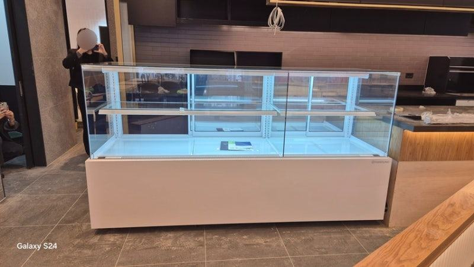
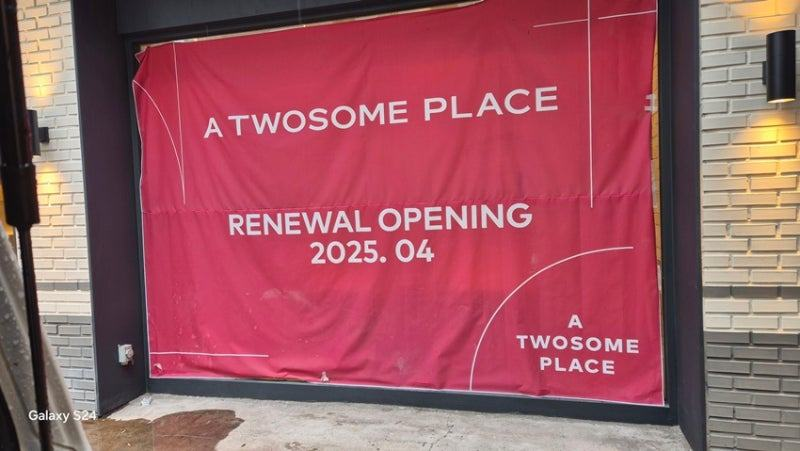
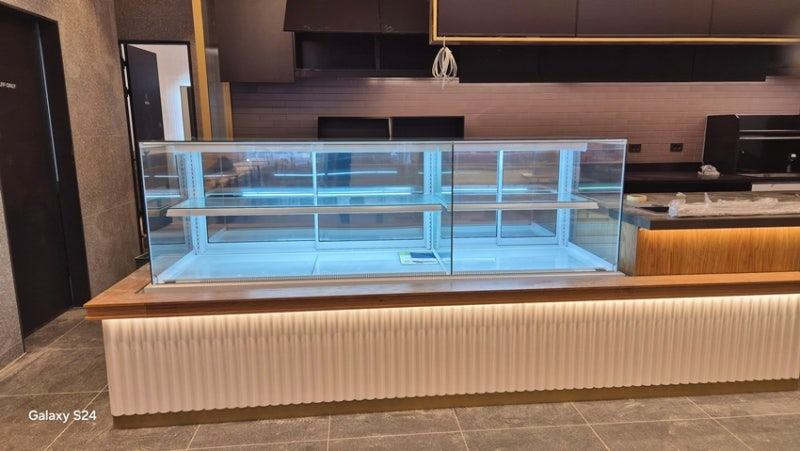
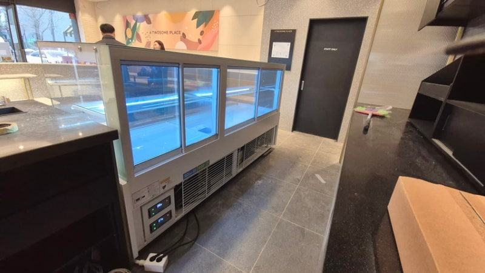
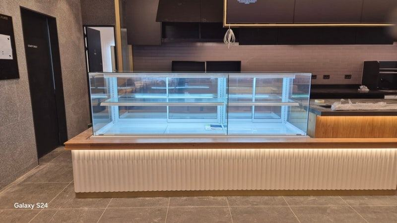
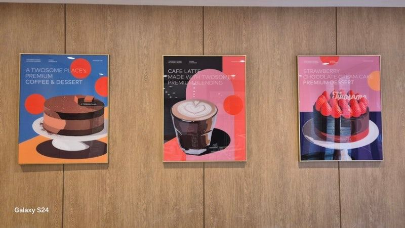
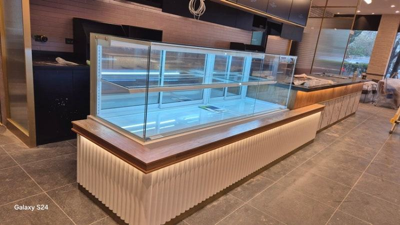
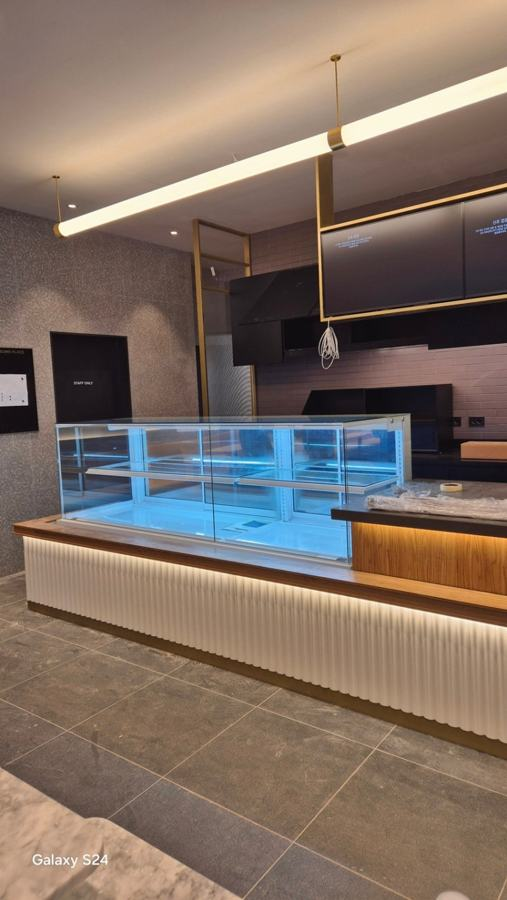
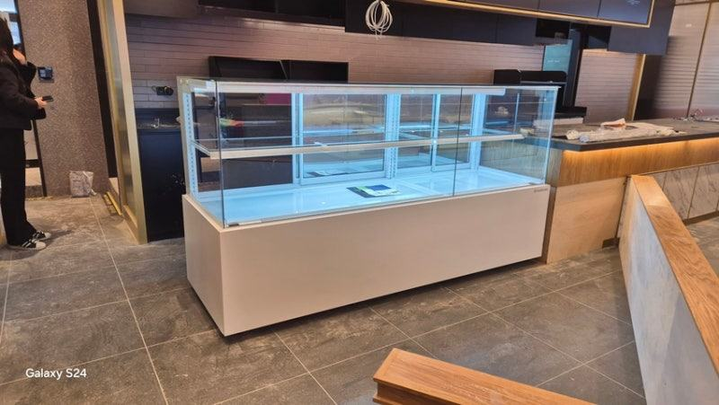

쇼케이스 이용 및 관리
냉장평대 다단쇼케이스 차이, 매장 폭과 상품으로 고르기

냉장평대는 허리 높이에서 위로 내려다보며 고르는 구조라 매장 가운데나 카운터 앞에 두기 좋고, 다단쇼케이스는 벽면에서 여러 단으로 눈높이 진열을 하기 좋습니다. 매장 폭이 좁고 품목이 많으면 다단, 손님이 둘러서서 고르는 상품이면 평대가 맞는 경우가 많습니다.
안녕하세요. 카페, 정육점, 마트까지 업종별 냉장 진열장을 제작하는 한성쇼케이스입니다.
매장 도면을 펼쳐 놓고 상담하다 보면 "평대로 할까요, 다단으로 세울까요?"라는 질문이 꼭 나옵니다.
둘 다 냉장 진열장이지만 손님이 상품을 만나는 방식이 완전히 달라서, 잘못 고르면 동선이 꼬이거나 진열량이 모자라게 됩니다.
어느 쪽이 더 좋다기보다 매장 구조와 파는 상품에 맞느냐의 문제입니다.
오늘은 두 제품이 어떻게 다른지, 그리고 우리 매장에는 무엇이 맞는지 판단하는 기준을 정리해 드리겠습니다.
1. 구조부터 다릅니다
냉장평대는 허리 높이의 낮은 진열대 위로 상품을 펼쳐 놓는 구조입니다. 손님은 위에서 내려다보며 고르고, 매장 가운데에 두면 앞뒤 양쪽에서 접근할 수 있습니다.
정육이나 반찬, 포장 샐러드처럼 한눈에 펼쳐 보여야 하는 상품에 잘 맞습니다.
다단쇼케이스는 세로로 여러 단의 선반을 쌓아 벽면에 붙여 쓰는 구조입니다. 같은 바닥 면적에서 진열할 수 있는 상품 수가 많고, 음료나 유제품처럼 규격이 일정한 상품을 줄 맞춰 세우기 좋습니다.
카페에서는 두 방식을 합친 콤비형도 많이 씁니다. 위쪽은 문이 달린 밀폐형으로 케이크와 디저트를, 아래쪽은 열린 구조로 샌드위치와 병음료를 두는 방식이라 좁은 매장에서 두 대를 놓기 어려울 때 대안이 됩니다.
2. 매장 폭과 동선으로 보는 선택
평대는 바닥 면적을 넓게 차지하는 대신 시야를 가리지 않아 매장이 탁 트여 보입니다. 반대로 통로가 좁은 매장에 평대를 놓으면 손님이 상품 앞에 멈췄을 때 뒤로 지나가기 어려워집니다.
다단쇼케이스는 벽에 붙이니 통로를 넓게 쓸 수 있지만, 높이가 있어 매장 안쪽 시야를 막을 수 있습니다.
출입문에서 카운터까지 시선이 어디로 흐르는지 먼저 그려 보시면 위치가 정해집니다.
- 통로 폭이 좁다면 벽면 다단을 먼저 검토하세요.
- 손님이 둘러서서 고르는 상품이면 평대가 편합니다.
- 카운터 앞 충동구매 상품은 낮은 평대가 잘 보입니다.


3. 상품과 냉기 관리의 차이
평대는 상품이 위쪽으로 드러나 있어 조명 아래에서 색과 질감이 잘 보입니다. 다만 위가 열려 있거나 유리 덮개를 자주 여닫으면 표면 온도가 쉽게 오르기 때문에, 상품을 너무 높이 쌓지 않고 냉기가 닿는 높이 안에 두는 습관이 필요합니다.
다단은 단마다 온도 차이가 생기기 쉬워 위아래 칸에 어떤 상품을 놓을지가 중요합니다. 온도에 민감한 상품은 냉기가 고르게 닿는 자리에, 회전이 빠른 상품은 손이 잘 닿는 눈높이 단에 두는 식으로 배치해 보세요.
4. 결정이 어려울 때 확인할 것
진열할 품목 수, 상품 하나의 크기와 높이, 하루에 채워 넣는 횟수를 적어 보시면 답이 좁혀집니다. 품목이 많고 자주 채워야 한다면 다단이, 품목은 적지만 넓게 보여 줘야 한다면 평대가 편합니다.
매장 도면이 있으면 두 가지 배치를 모두 놓고 비교해 보시는 것이 가장 확실합니다. 맞춤 제작이라면 평대 길이나 다단 높이를 매장 폭에 맞춰 조정할 수 있어 선택지가 넓어집니다.
- 진열 품목 수와 상품 높이
- 하루 보충 횟수
- 출입문에서 카운터까지 시선 흐름
체크리스트
- 매장 통로 폭
- 진열 품목 수와 상품 크기
- 손님이 고르는 방식(내려다보기·눈높이)
- 벽면 배치 가능 여부
- 콤비형 대안 검토
현장에서 자주 보는 경우: 카페 창업 때 쇼케이스 형태를 정할 때
프랜차이즈 카페 창업을 준비하시는 사장님들은 인테리어와 메뉴에 집중하다 쇼케이스 선택을 뒤로 미루는 경우가 많습니다.
하지만 디저트와 음료 중심 카페라면 쇼케이스가 손님 눈길을 끄는 진열 도구라, 온도 편차나 결로, 조명 부족은 바로 손님 불만으로 이어집니다.
그래서 저희는 공간과 상품, 손님 시선을 함께 보고 형태를 설계합니다. 섬세한 온도 조절이 가능한 디지털 컨트롤러와 유럽제 부품, 결로를 줄이는 균일 냉기 순환, LED 조명을 기본으로 하고, 매장에 맞춘 사이즈와 조명 색은 소량 주문이라도 맞춤 제작이 가능합니다.









자주 묻는 질문
냉장평대와 다단쇼케이스를 한 매장에 같이 둬도 되나요?
많이들 그렇게 쓰십니다. 벽면에는 다단으로 음료와 규격 상품을, 매장 가운데나 카운터 앞에는 평대로 주력 상품을 두면 동선과 진열량을 함께 챙길 수 있습니다.
좁은 카페에는 어떤 형태가 좋을까요?
두 대를 놓기 어렵다면 위는 밀폐형, 아래는 오픈형인 콤비형을 검토해 보세요. 디저트와 샌드위치, 병음료를 한 대에 나눠 진열할 수 있습니다.
평대 길이나 다단 높이를 바꿀 수 있나요?
맞춤 제작이라 매장 폭과 천장 높이, 진열 상품 크기에 맞춰 조정할 수 있습니다. 도면이나 실측 치수를 보내 주시면 배치안을 함께 검토해 드립니다.
매장 조건에 맞춰 만드는 한성쇼케이스
원하시는 제품 사진과 설치할 공간 사진만 보내 주셔도 매장에 맞는 구성을 추천해 드립니다.
- 전국 240여 개 A/S 전담 센터 운영
- 본사 대량 자재 매입으로 품질 대비 합리적인 가격
- 유럽제·삼성 냉각 콤프레셔 적용
- 국내 최초 쇼케이스 전문 디자이너 상주
매장 폭과 원하는 진열 구성을 알려 주세요. 실측과 견적을 안내해 드립니다.
031-986-2458